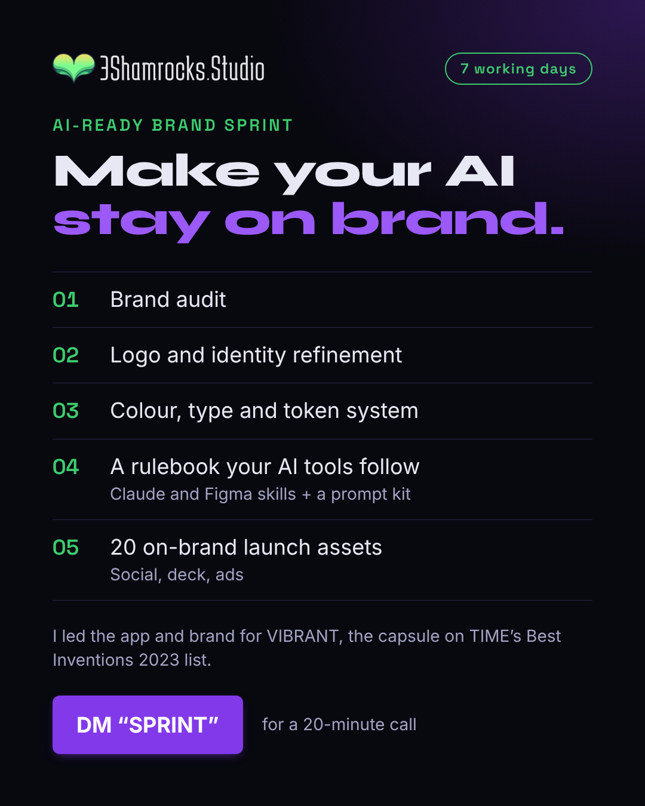

Make your AI stay on brand
The AI-Ready Brand Sprint: 7 working days, five deliverables, no price, DM “SPRINT”.
Caption (EN)
Your AI tools can make a hundred posts a day. Without rules, none of them look like you.
The AI-Ready Brand Sprint is 7 working days:
1. Brand audit
2. Logo and identity refinement
3. Colour, type and token system
4. A rulebook your AI tools follow (Claude and Figma skills + a prompt kit)
5. 20 on-brand launch assets (social, deck, ads)
I led the app and brand for VIBRANT, the capsule on TIME's Best Inventions 2023 list. Now I do it for startups.
DM "SPRINT" and we'll set up a 20-minute call.
Hebrew
בינה מלאכותית יכולה להפיק מאה פוסטים ביום. בלי כללים, אף אחד מהם לא ייראה כמוכם.
ספרינט המותג המוכן ל-AI: 7 ימי עבודה. ביקורת מותג, חידוד לוגו וזהות, מערכת צבע, טיפוגרפיה וטוקנים, חוברת כללים שכלי ה-AI שלכם עובדים לפיה, ו-20 נכסי השקה בסגנון המותג.
הובלתי את האפליקציה והמותג של VIBRANT. כתבו "SPRINT" בהודעה ונקבע שיחה של 20 דקות.
Hashtags
Awaiting Dave's OK. Not posted.